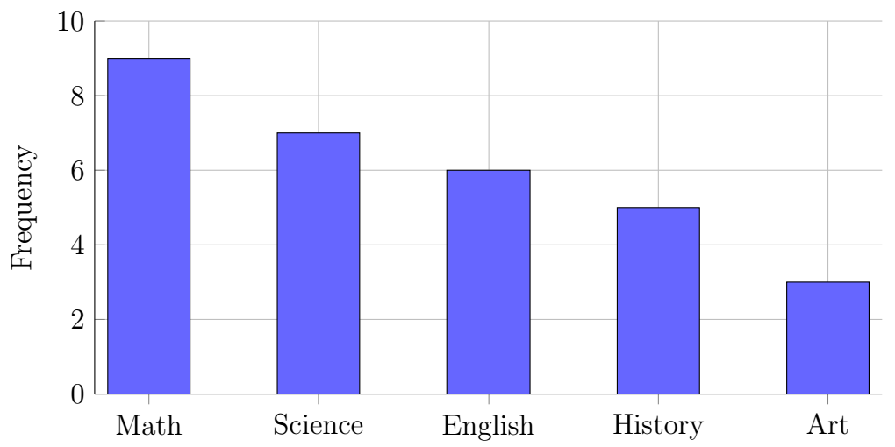
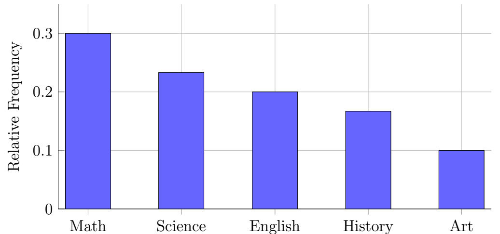
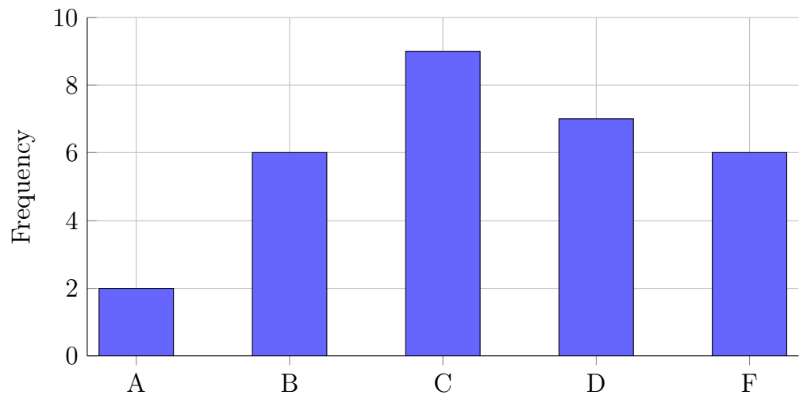
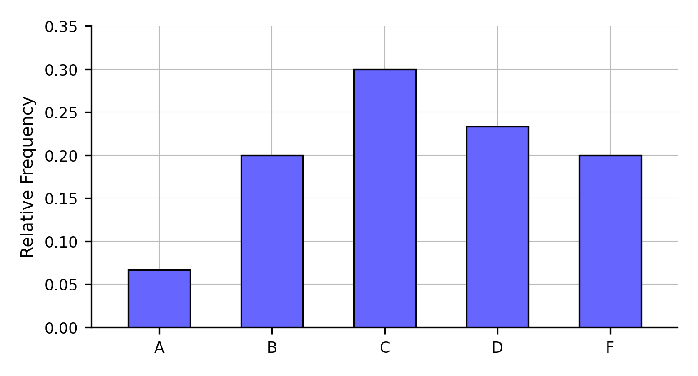
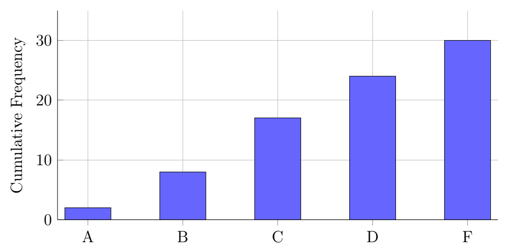
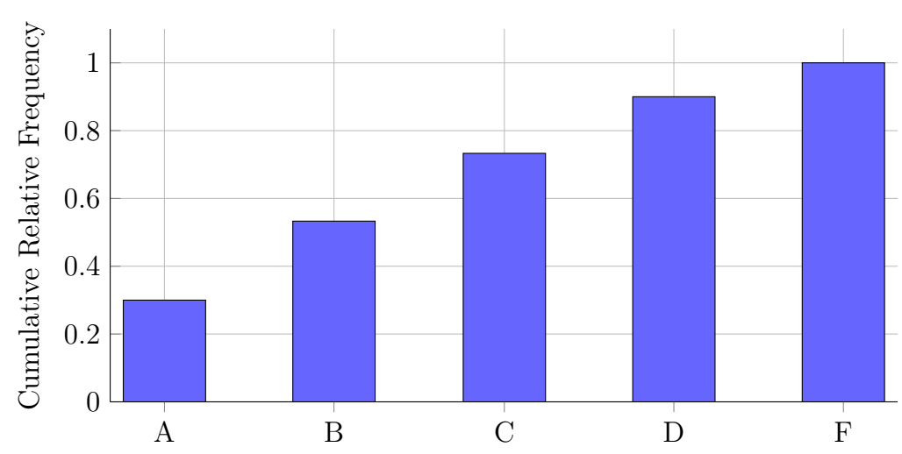
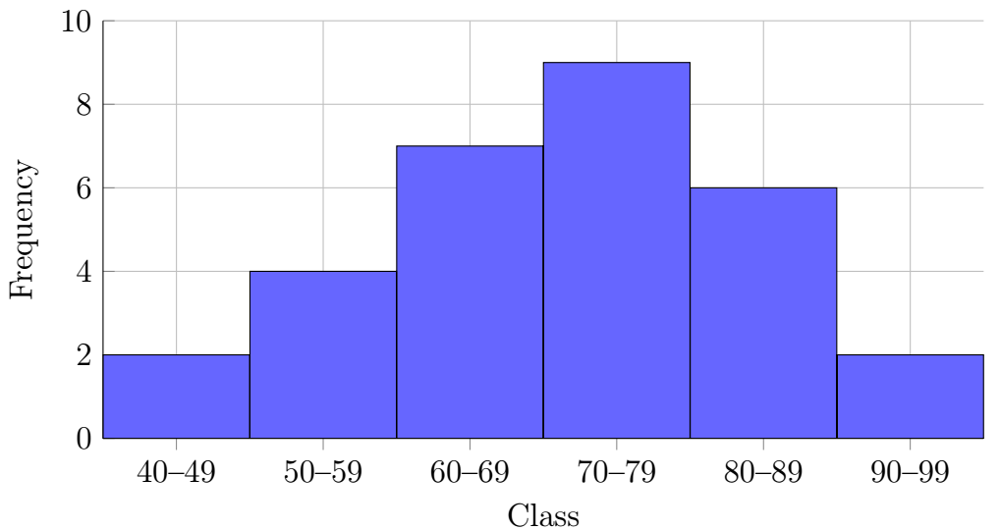
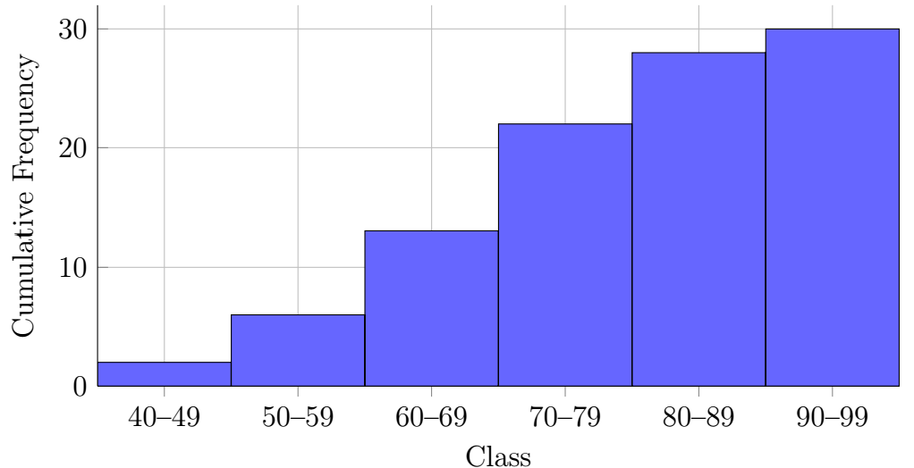
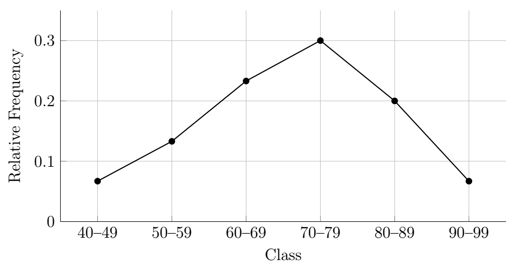
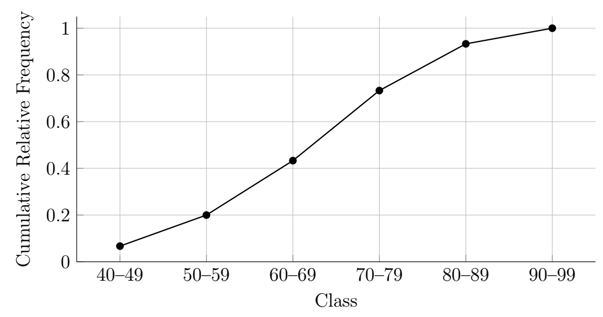

Chapter 4: Pictures of Data
Section 4.3: Bar Charts and Histograms
Bar Charts
Definition: Bar Chart
A bar chart is used to display categorical data.
Each category is represented by a separate bar whose height is proportional to its frequency or relative frequency.
Important characteristics of a bar chart include:
- Bars are separated by spaces.
- Categories may be arranged alphabetically or by frequency.
- For nominal categorical data, the order of the categories is generally not meaningful. For ordinal data, categories should usually be displayed in their natural order.
Using the “favorite school subject” data from above:

Similarly, we could show this as a relative frequency bar chart.

In the case of categorical data at the ordinal level, bar charts can be presented as cumulative as well. Consider the grade data above converted from scores to letter grades:
| Class | Freq | Cum Freq | Rel Freq | Cum Rel Freq |
|---|---|---|---|---|
| A | 2 | 2 | 0.067 | 0.067 |
| B | 6 | 8 | 0.200 | 0.267 |
| C | 9 | 17 | 0.300 | 0.567 |
| D | 7 | 24 | 0.233 | 0.800 |
| F | 6 | 30 | 0.200 | 1.000 |
| Total | 30 | 1.000 |
Because letter grades have a meaningful order, cumulative frequency and cumulative relative frequency can also be displayed meaningfully.




Histograms and Ogives
Definition: Histogram
A histogram displays quantitative data that have been grouped into classes.
Unlike a bar chart,
- adjacent bars touch one another,
- the horizontal axis represents numerical intervals,
- the area of each bar is proportional to its frequency.
When all classes have the same width, the height of each bar is proportional to frequency. When class widths differ, the area of each bar is proportional to frequency, and the height represents frequency density.
Histograms provide a visual summary of the distribution of numerical data. They are commonly used for ordinary frequency and relative-frequency displays.
Definition: Ogive
An ogive, also called a cumulative frequency graph, is a graph that shows the cumulative frequency of data. It is constructed by plotting cumulative frequencies against the corresponding class boundaries and connecting the points with line segments.
Example 1
Construct the following four displays for the grouped data:
- a frequency histogram,
- a relative-frequency histogram,
- a cumulative-frequency graph (ogive), and
- a cumulative-relative-frequency graph.
| Class | Freq | Cum Freq | Rel Freq | Cum Rel Freq |
|---|---|---|---|---|
| 40–49 | 2 | 2 | 0.067 | 0.067 |
| 50–59 | 4 | 6 | 0.133 | 0.200 |
| 60–69 | 7 | 13 | 0.233 | 0.433 |
| 70–79 | 9 | 22 | 0.300 | 0.733 |
| 80–89 | 6 | 28 | 0.200 | 0.933 |
| 90–99 | 2 | 30 | 0.067 | 1.000 |
| Total | 30 | 1.000 |
Solution




Shape of a Distribution
Skewness
Skewness describes the overall appearance, or shape, of a histogram.
A distribution is symmetric if the left and right sides are approximately mirror images.
Many naturally occurring measurements produce approximately symmetric distributions.
A distribution is positively skewed (or right-skewed) if the tail extends farther toward larger values.
Common examples include incomes and home prices.
A distribution is negatively skewed (or left-skewed) if the tail extends farther toward smaller values.
Scores on relatively easy examinations often produce negatively skewed distributions.
We will define these in further detail in the next chapter after we have formally discussed measures of center.
Modality
A unimodal distribution has one prominent peak. A mound-shaped distribution is a type of unimodal distribution that rises to a central peak and decreases toward both ends.
A uniform or rectangular distribution has approximately the same frequency across its classes.
A bimodal distribution may suggest that the data contain two distinct subgroups, although other processes can also produce multiple peaks.
A multimodal distribution may suggest the presence of several subgroups or processes affecting the data.
Outliers
Occasionally, one or more observations differ substantially from the majority of the data. These unusual observations are called outliers.
Outliers may result from
- recording or measurement errors,
- unusual but valid observations,
- observations from a different population.
Outliers should be investigated carefully before deciding whether they should be included in the analysis.
An outlier is not automatically an error. An unusual observation should be investigated to determine whether it represents a data-entry error, a measurement problem, a legitimate unusual case, or a member of a different population.
Key Ideas
Frequency distributions organize raw data into meaningful classes, making patterns easier to recognize. Numerical frequency distributions are constructed by selecting appropriate class widths, class limits, and class boundaries. Frequency, cumulative frequency, relative frequency, and cumulative relative frequency each provide useful summaries of the data.
Bar charts summarize categorical data, whereas histograms summarize grouped quantitative data. Histograms also reveal important characteristics of a distribution, including its center, spread, shape, and possible outliers.
Common distribution shapes include symmetric, positively skewed, negatively skewed, mound-shaped (unimodal), uniform, bimodal, and multimodal.